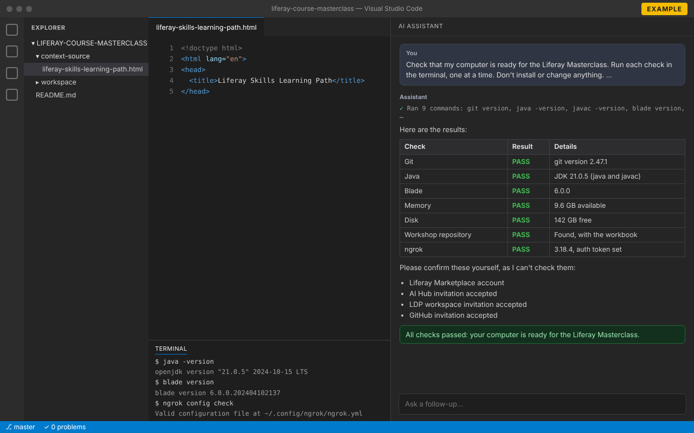

Prepare your computer
Follow Liferay's official classroom training prerequisites. They explain how to install and check each item below. Do this before you travel, so you don't depend on the venue's Wi-Fi.
-
Any recent version. You don't need a GitHub account for this part.
git version -
A JDK, not just a JRE, reporting a 21.x version.
java -version -
Version 6.0 or later. Run
blade updateif yours is older.blade version -
Enough to run Liferay DXP on your computer during the workshop.
-
Working through the matching Liferay Learn Learning Path first lets the workshop move faster and go deeper.
Install your tools
You'll work in your Liferay Workspace in VS Code, with an AI assistant at your side. Install VS Code, then the AI assistant you have access to: one is enough, and ticking it completes this step.
-
VS Code makes it easy to work with your Liferay Workspace.
-
With the extension installed, you've got Claude at your fingertips in VS Code.
-
Codex, OpenAI's coding agent, comes with your ChatGPT plan: sign in to the extension with your ChatGPT account.
-
Sign in to VS Code with the GitHub account that has your Copilot access.
Create your accounts
Sign up with the email address you registered for the workshop with.
-
AI Hub and LDP both need to reach your Liferay DXP instance on a public URL, and ngrok provides it. Create an account with your email address so we can add you to our Liferay Enablement ngrok account.
-
You'll need it to download new product license files for CMP/DSR.
Accept your invitations
You should receive these invitations before the workshop. Accept each one when it arrives, and check your spam folder if one is missing.
-
An invitation to join AI Hub for the training.
-
An invitation to join an LDP workspace for the training.
-
An invitation to the repository with the workbook you'll be testing and its context source materials. Until you accept it, the link shows "Page not found". Once you've accepted, clone it:
git clone https://github.com/liferay/liferay-course-masterclass.git
Open the workbook
The workbook is the step-by-step guide you'll follow during the workshop.
-
It's in the workshop repository, at
context-source/liferay-skills-learning-path.html. Open it from your clone, or on GitHub once you have access.
Check everything with your AI assistant
Let the AI assistant you installed in step 2 check your setup for you. It runs the checks in a terminal and tells you what passes and what to fix.
- In VS Code, open the folder with your clone of the workshop repository (File → Open Folder).
- Open your AI assistant's chat:
- Claude Code: click the Claude icon, or run Claude Code: Open from the Command Palette.
- OpenAI Codex: click the Codex icon in the sidebar.
- GitHub Copilot: open the Chat view and switch the mode to Agent, so Copilot can run commands.
- Copy the prompt below, paste it into the chat and send it. When the assistant asks to run a command, allow it: the checks only read information.
Check that my computer is ready for the Liferay Masterclass. Run each check in the terminal, one at a time. Don't install or change anything. 1. Git: run `git version`. PASS if Git is installed. 2. Java: run `java -version` and `javac -version`. PASS if both report version 21.x (a JDK, not just a JRE). 3. Blade: run `blade version`. PASS if it's 6.0 or later. 4. Memory: check the free RAM. PASS if at least 4 GB is available. 5. Disk: check the free space on the drive with my home folder. PASS if at least 10 GB is free. 6. Workshop repository: find my clone of github.com/liferay/liferay-course-masterclass (in the open folder or my home folder). PASS if it exists and contains context-source/liferay-skills-learning-path.html. 7. ngrok: run `ngrok version` and `ngrok config check`. PASS if ngrok is installed and has an auth token; otherwise WARN. Then show the results as a table with the columns Check, Result (PASS, WARN or FAIL) and Details. For anything that isn't PASS, tell me how to fix it. Finally, list what I need to confirm myself, because you can't check it: my Liferay Marketplace account, and my AI Hub, LDP workspace and GitHub invitations.

-
Run the check below, fix anything marked FAIL or WARN, and run it again until everything passes. Then confirm the accounts and invitations it lists.
Something not working, or an invitation hasn't arrived? Contact the workshop organizers, or see Get help.